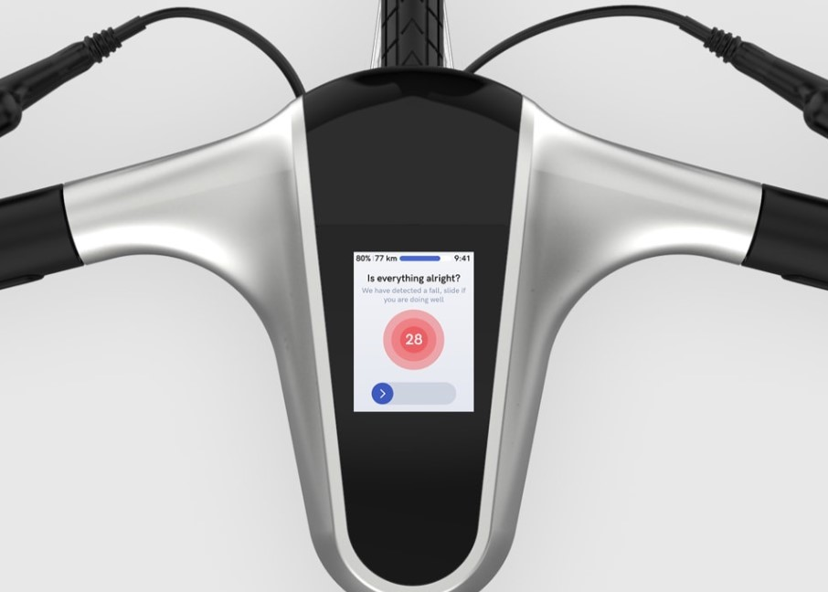

Nos vélos électriques sont les plus innovants du marché actuel. Leur design épuré créé avec tes matériaux tel que l’aluminium et le carbone vont assurent une légèreté et une prise en main facile, en effet nos vélos ne pèsent que 13,9 kg. Leurs batteries disposent d’une autonomie de 70km et peuvent vous propulser jusqu’à 25km/h, nos vélos sont donc une parfaite alternative écologique à votre voiture


Nous ne pouvons pas éviter les chuttes mais nous vous proposons l'alerte accident. En cas de chute, un message est automatiquement envoyé à votre contact d’urgence grace à notre application.

Pour nous, votre sécurité est essentielle, c’est pourquoi nous vous conseillons le port de casque et de vêtements réfléchissants durant votre utilisation. Grace à une collaboration avec le magasin d’équipement Bouticycle situé à sur l’avenue Franklin Roosevelt, nos abonnées annuel et mensuel bénéficieront d’une réduction de 10% sur tout le matériel proposé.
Mettre code en vélo / piste cyclable/ pas rouler sur trotoire etc